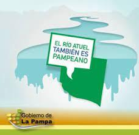

El
Faro,
un programa de ciencia
Emitidos
Conduccción
Contacto
Radio Online
Faro,
Un programa de ciencia
Contacto
Formulario de contaco
Nombre y apellido
Correo electrónico:
Suscribirse al newsletter?
Comentarios:
Publicite aqui!
